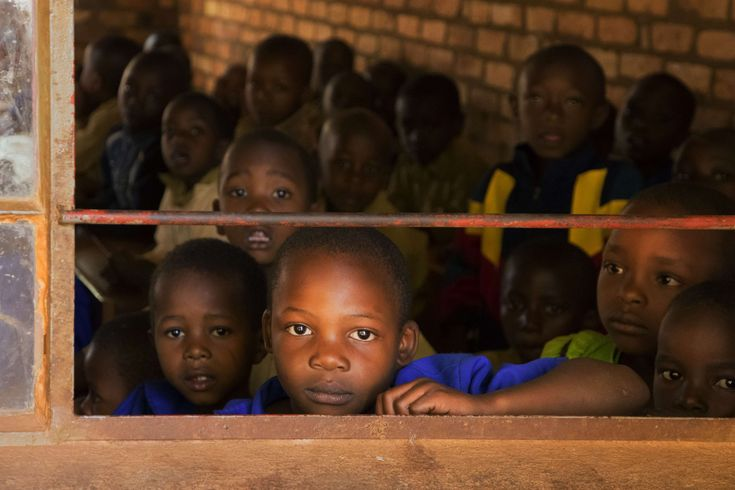
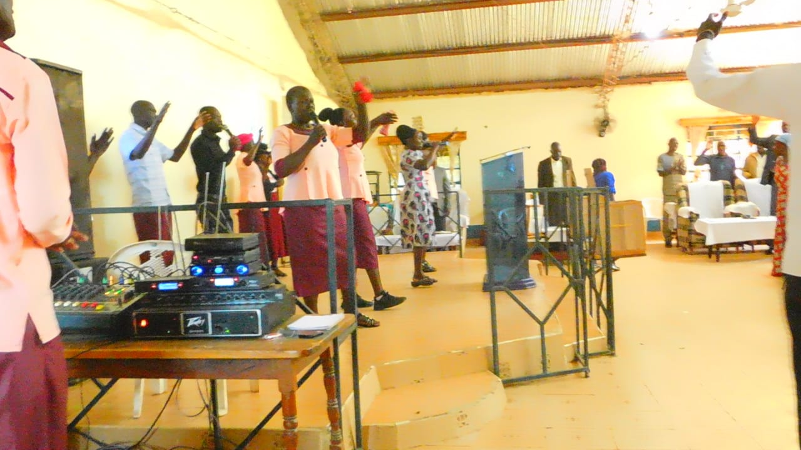

FIND YOUR PLACE AT NEWLIFE FOUNTAIN MINISTRIES
Newlife Fountain Ministries is all about serving God and our community
in all aspects and reaching out to everyone through our deeds and through
the spreading of the good news of our Lord and Savior Jesus Christ.
Through our ministry different groups have benefited through our outreach
programs.
1980
Newlife Missions was founded by Carl Eric, A missionary envisioned to bring about positive growth to Africa as a whole

1990
An African Bishop was chosen to lead the ministry after the sad passing of the founder and leader, Carl Eric
2003
The second Bishop, Moses Wamalwa took over Newlife Missions leadership and through his wisdom nad God's grace Moses has been serving the ministry as the leader alongside other leaders to see the ministry grown and expand its territories to where it is now
2010
A school to educate the less fortunate and orphaned in the society was built and launched by the church leadership. Despite the many challenges the school stands and through it many children get educated freely.

2013
Newlife Missions expanded territories and started building churches in other geographical locations and not only based in one county and indeed the grace of the Lord has been sufficient all along.

2016
Newlife Missions partnered with International Christian Ministries which offered bible training and other leadership training programs to their pastors to ensure the leaders have a deep understanding of the word to deliver to the believers
2022
Newlife Missions changed its name to Newlife Fountain Ministries which stands to this day
